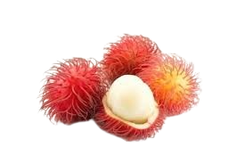

<ion-content [fullscreen]="true">
  <ion-grid class="a">
    <ion-row>
      <ion-col size-md="6" size="12">
    <ion-row class="ion-margin-top ion-margin b">
      <ion-col size-md="1" size="2">
        <ion-icon class="b1" name="chevron-back-outline"></ion-icon>
      </ion-col>
      <ion-col size-md="10" size="8"></ion-col>
      <ion-col size-md="1" size="2">
        <ion-icon class="b2"  name="cart-outline" size="large"></ion-icon>
        <ion-badge class="badge" color="danger">2</ion-badge>
      </ion-col>
    </ion-row>
    <ion-list class="ion-margin-top ion-margin c"></ion-list>
  </ion-col>
  <ion-col size-md="6" size="12">
    <ion-list class="ion-margin-top d">
      <ion-row class="ion-margin-top ion-margin e">
        <ion-col size-md="8" size="6">
          <ion-label class="e1">Rambutan</ion-label>
        </ion-col>
        <ion-col size-md="2" size="1"></ion-col>
        <ion-col size-md="2" size="5">
          <ion-list class="e2">
            <ion-list class="e21">
            <ion-icon class="e211" name="remove-outline"></ion-icon>
          </ion-list>
          <ion-list class="e23">
            <ion-icon class="e211" name="add-outline"></ion-icon>
          </ion-list>
          <ion-list class="ee22">
            <ion-label class="e22">1</ion-label>
          </ion-list>
          </ion-list>
        </ion-col>
      </ion-row>
      <ion-row class="ion-margin-top ion-margin">
        <ion-col size-md="2" size="4">
          <ion-list class="f">
            <ion-label class="f1">$22.99</ion-label>
          </ion-list>
        </ion-col>
        <ion-col size-md="10" size="8"></ion-col>
      </ion-row>
      <ion-row class="ion-margin-top ion-margin">
        <ion-col class="g" size-md="5" size="6">Description</ion-col>
        <ion-col size-md="6" size="4"></ion-col>
        <ion-col class="g1" size-md="1" size="2">Fruit</ion-col>
      </ion-row>
      <ion-list class="ion-margin-top ion-margin h">
        <ion-label class="h1">Rambutan is a medium-sized tropical tree in the family sapindaceae, also refers to the edi ble fruit produced by this tree insi... <span class="h2">readmore</span></ion-label>
      </ion-list>
      <ion-row class="ion-margin-top ion-margin">
        <ion-col size="3">
          <ion-list class="i">
            <ion-icon class="i2"  name="cart-outline" size="large"></ion-icon>
        <ion-badge class="badge1" color="danger">+</ion-badge>
          </ion-list>
        </ion-col>
        <ion-col size="1"></ion-col>
        <ion-col size="7">
          <ion-list class="i3">
           <ion-label class="i4">Buy Now  ></ion-label></ion-list>
        </ion-col>
        <ion-col size="1"></ion-col>
      </ion-row>
    </ion-list>

    
      </ion-col>
    </ion-row>

  </ion-grid>


  <!-- <swiper-container>
    <swiper-slide>
      
    </swiper-slide>
    <swiper-slide>
      
    </swiper-slide>
    <swiper-slide>Slide 3</swiper-slide>
  </swiper-container> -->
</ion-content>
